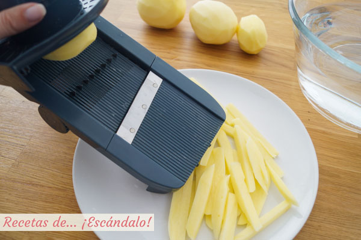

----------------------------------------------------------------------------------------------------------------------------------------------------------------------------------
Salpimenta los muslitos de pollo por todas sus caras.
En una sartén en la que pueda caber todo el pollo echa un chorrito de aceite, ponla a fuego medio y cuando esté caliente añade los muslos de pollo. Deja que se doren por un lado y ve girándolos para que queden dorados por todas partes. En menos de 10 minutos suelen estar listos, resérvalos aparte.
Pela y pica muy finitos los dientes de ajo.
Pela la cebolla y córtala en trocitos pequeños.
Cuando hayas sacado los muslitos de pollo de la sartén echa el ajo y la cebolla junto con un poco de sal y cocina a fuego medio unos 5 minutos, hasta que la cebolla esté empezando a dorarse.
Incorpora de nuevo los muslos de pollo junto con el vino blanco, el coñac, las hojas de laurel y las ramitas de tomillo y de romero.
Sube el fuego para que esté fuerte y se evapore el alcohol, tardará unos 2-3 minutos.
Incorpora el caldo de pollo o el agua (debe cubrir hasta casi la mitad los muslos de pollo, si falta échale un poco más).Cuando empiece a hervir baja el fuego para que esté suave pero que siga borboteando, tapa la sartén y cocina un total de 45 minutos o hasta que el pollo esté tierno y no te olvides de darle la vuelta a los 25 minutos. Para comprobar que está tierno tan solo tienes que abrir un poco un muslo de pollo, verás que la carne se despega con facilidad del hueso y está jugosa y blanca, sin zonas rosadas y crudas.
Mientras vamos a preparar las patatas «fritas» al horno. Se trata de conseguir un resultado similar a si las freímos pero de una forma más saludable y quedando igualmente riquísimas. Pela las patatas y córtalas en palitos más o menos del mismo tamaño con un cuchillo o mejor aún con una mandolina (es lo que he utilizado yo).
Ponlas a remojo en un bol con agua fría durante 20 minutos para que suelten el almidón y así evitar que después se peguen unas con otras.
Precalienta el horno a 180ºC con calor arriba y abajo y ventilador.
Escurre las patatas y sécalas muy bien con papel de cocina o con un paño. Ponlas en un bol, echa un poco de aceite de oliva (por ejemplo un par de cucharadas soperas) y mézclalas con unas pinzas de cocina o con tus propias manos, que queden todas impregnadas con el aceite.
Forra una bandeja de horno con papel de horno y coloca en ella las patatas. Si quieres que queden bien crujientes lo que tienes que hacer es que no haya nunca unas encima de otras para que se cocinen perfectamente por fuera. A mi no me importa que no queden totalmente crujientes por fuera y me gusta preparar gran cantidad de una vez así que las horneo como puedes ver en la fotografía.
Introduce la bandeja en el horno a altura media y hornéalas durante unos 30 o 40 minutos o hasta que veas que están a tu gusto. Cada 10 minutos lo ideal es que las remuevas un poco para que se vayan cocinando por todos lados. De nuevo, si las quieres bien crujientes tienes que procurar cada vez que las muevas que no estén unas encima de otras.
Vigila las patatas y ve probando alguna para saber cuando sacarlas del horno, ¡con cuidado de no quemarte!
Sácalas del horno y ahora que aún están calientes échales un poco de sal por encima.
Cuando el pollo esté listo, si quieres que la salsa se reduzca y espese un poco puedes destapar la sartén y seguir cocinándolo a fuego medio unos 5 minutos más o hasta que esté a tu gusto. También puedes espesar la salsa de forma fácil y rápida añadiendo 1/4 de cucharadita de postre de maicena disuelta en un poco de agua a la salsa cuando esté borboteando. Además, también puedes triturar la salsa si no te gusta que se noten los trocitos de cebolla.
Prueba la salsa por si tienes que rectificarla de sal, y ya tienes el pollo en salsa de la abuela listo
----------------------------------------------------------------------------------------------------------------------------------------------------------------------------------